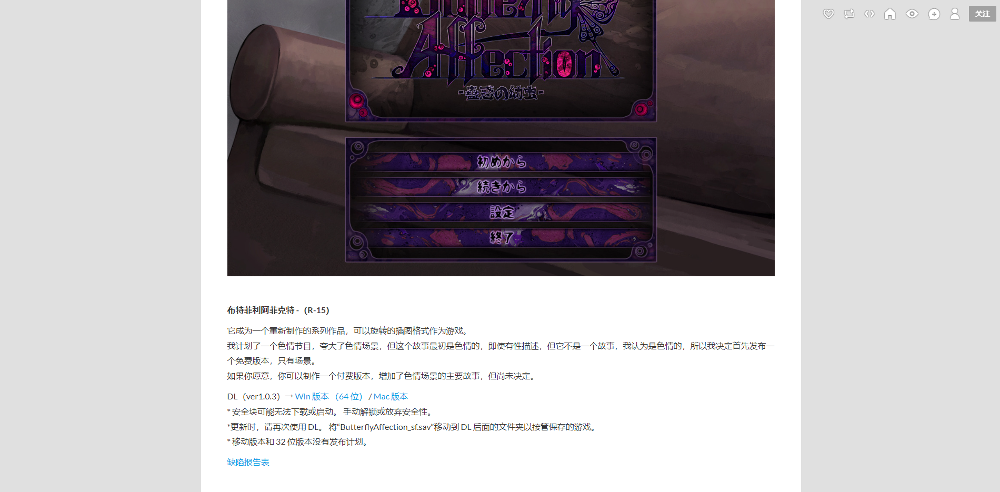
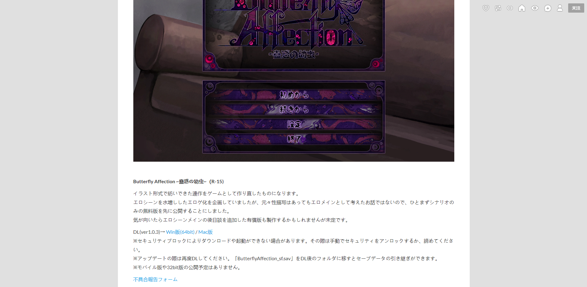

见到过么？来看看吧~ - - - - - - - - - - - - - -
- - - - - - - - - - - - - - Ca清（id：T_gas）编辑此贴发布并保持贴子更新 本贴是2023.1.1版 本贴在百度贴吧——teaching_feeling吧首发且保持最新 本贴为所有吧友提供信息支持 转载要求注明来源及编者，编者保留该帖一切权利
---- 简介 - - - - Butterfly Affection ~蠱惑の幼虫~，中文名——幼虫 Affection是爱，情感的意思，所以理论上来说Butterfly Affection应译为蝴蝶之爱或蝴蝶之情，且也有蝴蝶情缘的翻译。 该游戏于2019年1月6日由作者ray-k在他的tumblr上免费发放，最后更新在2019年1月7日18:50，该游戏并不是完整的游戏，且作者并不允许其他人在自己作品基础上继续创作，其表明自己日后有更新的打算。
---- 内容 - - - - 我捡到幼虫，自以为在掌控之中地喂养它...... 它在成长......我有了恐惧的心理...... 它？她？......我的喜爱占了上风...... 它的智慧远比想象中的高......我已经无法掌控...... 她好像很快乐......在和我...一起的时候...... 恐惧深深淹没了我...... 她...爱我吗...... ......这是...？......虫..交......我...*无力*...... ...... 我...记录...... 很久以前...或者说我刚得到她的时候...... 藏起来一本日记......藏得天衣无缝...... 上了锁...甚至她都不知道存在...才对...... 记录...... ......！！！ ！！！！！！ ！！！发现了红色的...不属于我的字迹......“@%*眩晕*&$(”...... ......“愛して”......？*、。‘*；，#*？ ......*眩晕*...*&/*’；、’；#@（ ...... ...... ——她来了——
---- 附加内容 - - - - 一、该游戏过去被误解是TeachingFeeling的一个版本，叫做幼虫，所以中译名沿用幼虫，实际上两者是互不关联的独立游戏，在一些魔改版中插入了该作的内容 二、发布页截取  
本贴是2023.1.1版
历史版（累计有阅读数：2400、点赞数：54、回复数：19）：
2022.7.4版（累计有阅读数：2400、点赞数：54、回复数：19）